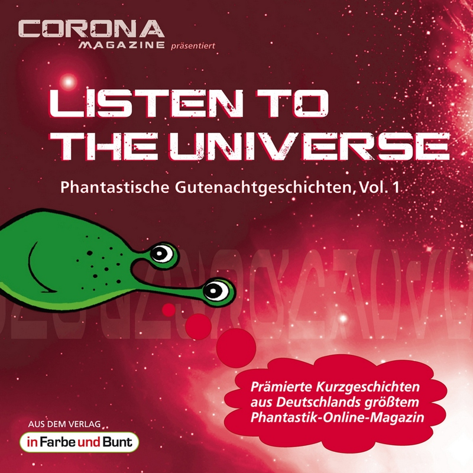

Listen to the Universe – Phantastische Gutenachtgeschichten (© in Farbe und Bunt Verlag)
Gutenachtgeschichten sind nur was für Kinder? Das sehen wir anders!
Seit über zwölf Jahren prämiert unser Corona Magazine monatlich eine von einer wechselnden Jury ausgewählte Kurzgeschichte. Die Audiobuch-Reihe des Listen to the Universe – Phantastische Gutenachtgeschichten aus dem Verlag in Farbe und Bunt enthält in jeder Ausgabe sechs ungekürzte Fassungen dieser Perlen. Vertont werden die Geschichten von im Phantastik-Genre bekannten Sprechern. So leihen Vol. 1 Mona & Kris Köhler und René Wagner ihre Stimme, und Jürgen Bleekmanns traumhafte Musik umrahmt das Gesamtwerk. Die ideale Unterhaltung vor dem Zubettgehen, in der entspannten Alltagsflucht oder auf einer kurzen Zug- oder Autofahrt!
Die rund 95 Minuten lange Kurzgeschichten-Anthologie steht mit folgenden Inhalten in sämtlichen gängigen Online-Shops als Download bereit:
»Sternenturm« von Bernd Wichmann
Im ewigen Winter nach der Katastrophe: Die letzten Menschen suchen nach ihrer Zukunft.
»Go mit Glasperlen« von Niklas Peinecke
Auf der Raumstation im Orbit um Neptun: Die außerirdischen Artefakte geben ihr Geheimnis preis.
»Tonspur« von Regina Schleheck
Die Zeitreise der besonderen Art: Die Vergangenheit wird rekonstruiert.
»Der Mann in der Mitte, der zum ersten Mal den Mann an der Seite sah« von Christian Künne
Inmitten unzähliger paralleler Welten: Kay kämpft ums Überleben.
»Entsorgung« von Torsten Jägel
Das größte Ereignis der Weltgeschichte: Ein Wurmloch öffnet sich.
»Erwins Reise« von Uwe Sauerbrei
Hauptgewinn für Erwin: Doch das intergalaktische Transportsystem spielt nicht mit.
Eine neue phantastische Gutenachtgeschichte gibt es jeden Monat hier im Corona Magazine.
Träumen Sie gut!